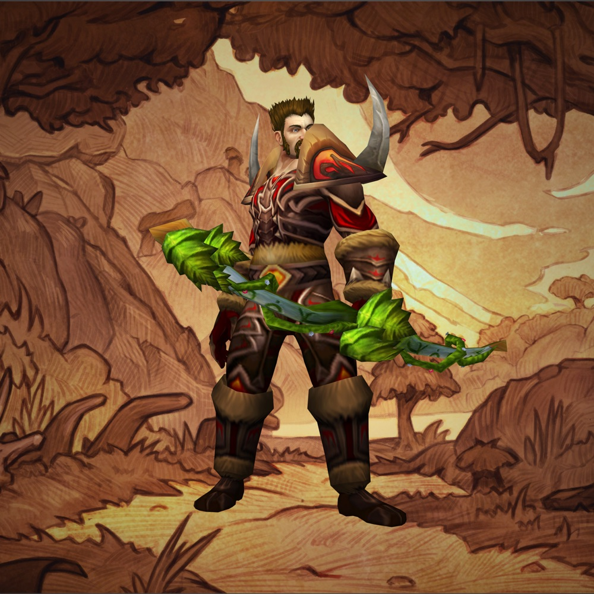
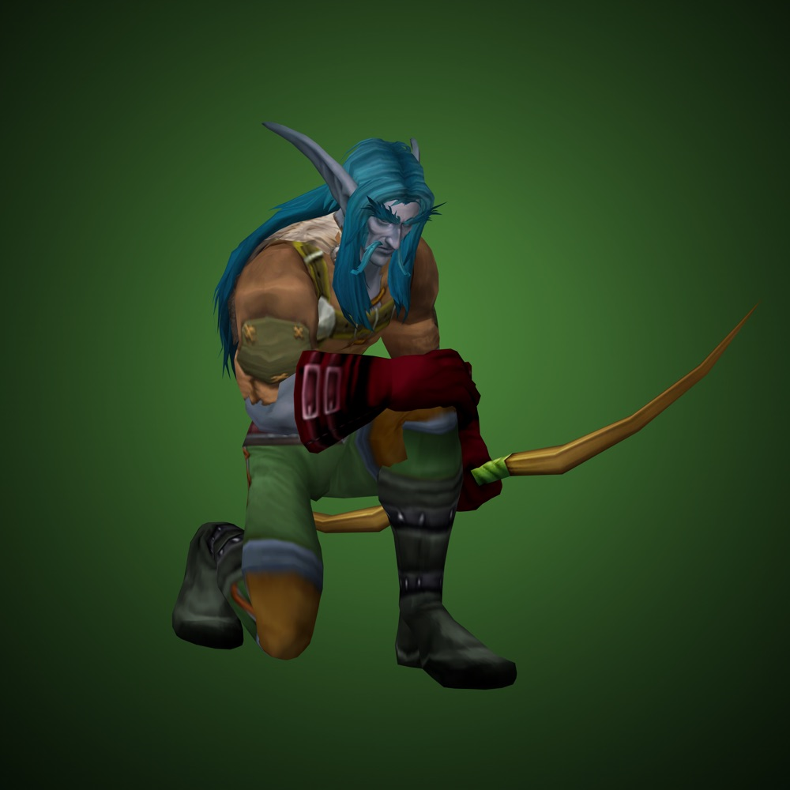
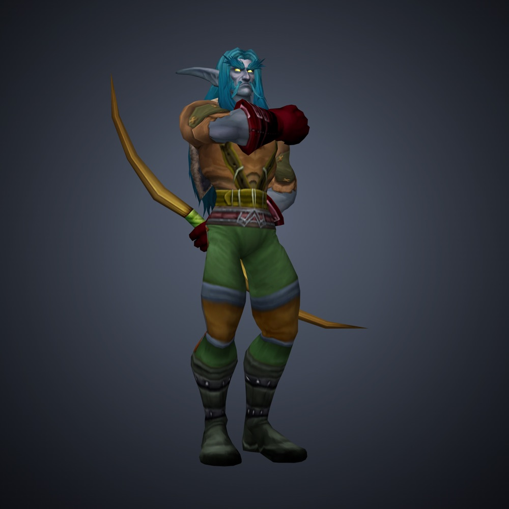
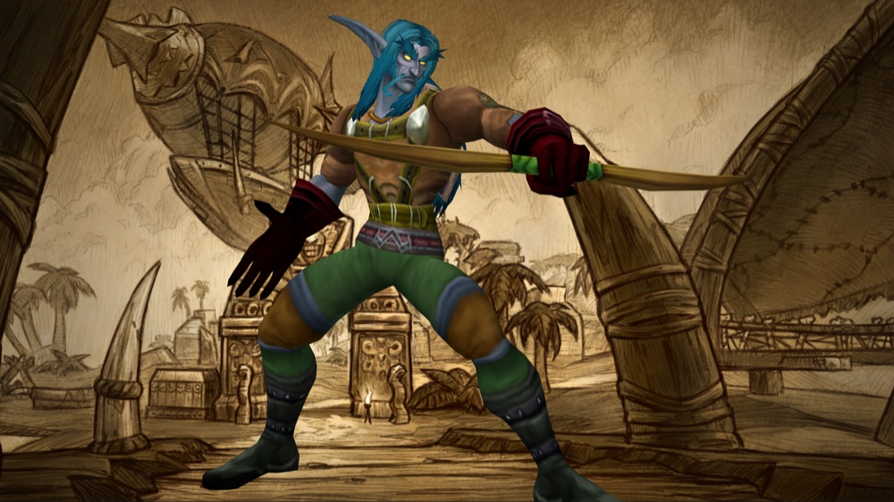

Human hunters, and five other combinations 2004 never offered
2004 said
Five races can be hunters: dwarf, night elf, orc, tauren and troll.
Forever says
Humans can be hunters too. It's one of six new race and class combinations.
The hunter chapter opens with a table of starting attributes, one row for each race that can play the class. There are five rows. Human is not one of them.
Blizzard has confirmed six new combinations for Forever: human hunter, gnome priest, dwarf shaman, orc mage, troll warlock and undead paladin. Some of them people have been asking about for two decades.
A "combo" is which race you look like and which class you play. In the original game not every race could be every class, so a new combination is a big deal to anyone who has waited twenty years for one.
Where this comes from
How we verify- The 2004 guide
The hunter table lists dwarf, night elf, orc, tauren and troll only
Read from the guide, printed page 101 - Blizzard
Six new race and class combinations, as named
Blizzard: Deep Dive panel recap

More from this chapter

Testing in betaPets never stop eatingBlizzard hasn't said whether pet happiness returns. We're testing it in the beta.

Testing in betaThree bags, feeding twoBlizzard hasn't said whether quivers and ammunition return.

Changed in ForeverHunter, then and nowAimed Shot for every hunter at 20, traps usable in combat, pets that scale with your gear. The dead zone stays.